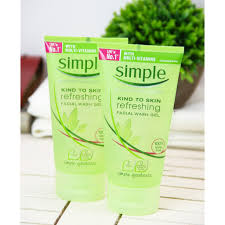
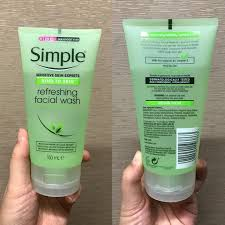
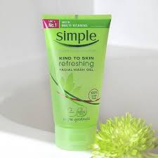
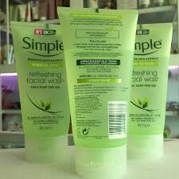
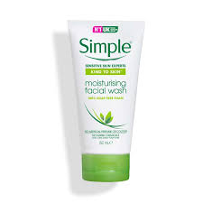

What is Ajax?
As defined in Wikipedia
AJAX is a group of interrelated web development techniques used to create interactive web applications or rich Internet applications. With Ajax, web applications can retrieve data from the server asynchronously in the background without interferfering with the display and behavior of the existing page.
- Sữa rửa mặt Simple chứa thành phần giúp nhẹ nhàng làm sạch da mà không làm mất đi độ ẩm tự nhiên của da.
- Sản phẩm không chứa hương liệu, phụ gia không cần thiết và đẫ được kiểm nghiệm da liễu.
- Phù hợp với mọi loại da, kể cả da nhạy cảm.
- Sản phẩm có thiết kế đặc trưng của hãng Simple - màu xanh lá rất tươi mát.
Simple là thương hiệu dành cho da nhạy cảm được ưa chuộng số 1 ở thị trường UK, sản phẩm được bán hầu hết trong các hiệu thuốc, thành phần lành tính, là sản phẩm hoàn hảo nhất cho làn da nhạy cảm. Sữa rửa mặt cho da nhạy cảm Simple Kind to Skin Refreshing Facial Wash xuất xứ từ Anh Quốc với dung tích 150ml có kết cấu gel trong cùng công thức không chứa dầu nhẹ nhàng làm sạch da, lấy đi bụi bẩn cùng bã nhờn dư thừa, mang lại làn da với lỗ chân lông thông thoáng, giảm nguy cơ hình thành mụn trứng cá và mụn đầu đen. Là sự hòa hợp hoàn hảo giữa các thành phần giúp nhẹ nhàng làm sạch da mà không làm mất đi độ ẩm tự nhiên của da, trả lại làn da mềm mại tươi mát. Sản phẩm không chứa hương liệu, phụ gia không cần thiết và đẫ được kiểm nghiệm da liễu. Phù hợp với mọi loại da, kể cả da nhạy cảm.
    